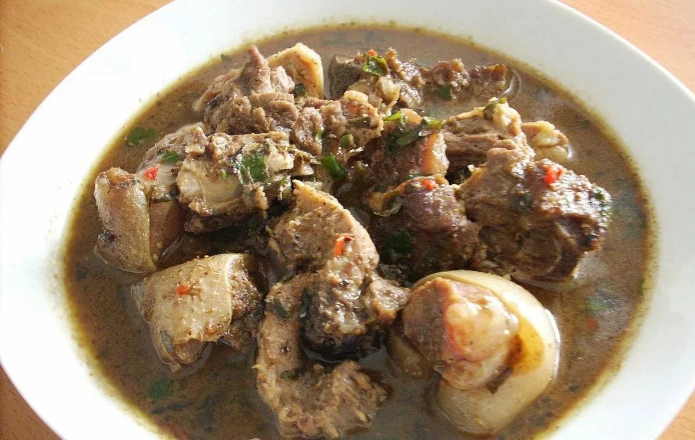

White Soup

Description
My first experience of afia efere (white soup) was at my uncles wedding some few years ago and boy did I enjoy it? I loved every bit of it. Everyone wanted to have a taste of afia efere also called white soup at the engagement party, it was a hit. I asked my sister in-law for the recipe and she was really happy to share it with me. I would want to believe white soup is prepared in different ways going by the bit of research I made. The key ingredients are pounded yam (as thickener), ogiri which can be substituted with dawadawa or iru (locust beans), Adrian fruits and pepper soup spice.
Ingredients
- 2 Habanero/Rodo (adjust to your preference)
- 2 Slices Yam (cooked and pounded or potato/poundo)
- 1 Tablespoon Red pepper flaked/dry pepper
- 2 Tablespoons Ground crayfish
- ¼ Cup onion (chopped)
- 2-3 Tablespoons Ogiri/Iru (I used Iru; locust beans)
- 1/2 Teaspoon Uzazi seeds or leaves
- 1-1.5 Tablespoons Utazi leaves/fresh parsley (I used both)
- 3 Ehuru (calabash nutmeg seeds; about ½ teaspoon)
- 1/2 Teaspoon Uda seeds
- Seasoning powder/cubes
- Salt to taste
- 1 Fresh fish (cut into steak, gutted and cleaned)
Steps
- the thickener: Peel the yam cut into chunks then boil until soft then pound; you can use a blender/food processor/food processor/mortar and pestle then set aside. Make sure your pounded yam is not too thick so it will dissolve easily. I usually store my yam in the freezer in case if you're wondering why the yam looks dry...lol
- Cut the fish, remove the guts then clean. For easy cleaning, pour hot water over the fish for a few minutes about 5minutes is okay, remove and use like bread knife or blunt knife to scrape off the slime afterward rinse very cold water several times.